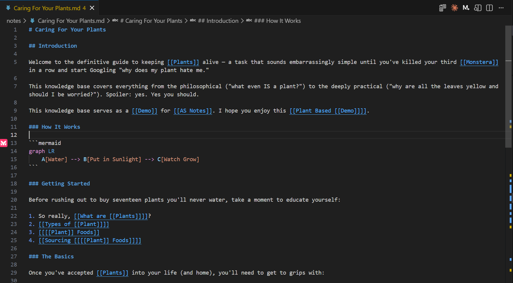

AS Notes
This documentation was written and generated using AS Notes. See Publishing a Static Site for how you can use AS Notes for your docs, including deploying to GitHub Pages.
AS Notes is a VS Code extension that turns your editor into a Personal Knowledge Management System (PKMS). It brings Wikilinks, backlinks, daily journaling, encrypted notes, and a task panel — all without ever sending your data anywhere.
Install: https://marketplace.visualstudio.com/items?itemName=appsoftwareltd.as-notes

Why VS Code?
Using VS Code as your notes app gives you a huge amount for free before you even start using AS Notes features:
- Cross-platform and web-based (via VS Code Workspaces)
- Tabs, file explorer, themes, keyboard shortcuts
- A vast extension library — Mermaid diagrams, Vim mode, and more, all usable alongside AS Notes
- AI chat (GitHub Copilot, Claude, etc.) to query and work with your notes
- Outliner-style indentation via
Ctrl+[/Ctrl+] - Syntax highlighting for code embedded in your notes
Features at a Glance
Free
| Feature | Summary |
|---|---|
| Wikilinks | Link between notes with [[Page Name]] — resolves anywhere in your workspace |
| Backlinks | See every note that links to the current page |
| Daily Journal | Open today's journal with a single shortcut |
| Task Management | Toggle todos with a keyboard shortcut and browse them all in a panel |
| Slash Commands | Insert code blocks, dates, and task tags — type / to open the menu |
| Images and Files | Drag and drop images, paste from clipboard, hover to preview |
| Publishing a Static Site | Convert your notes to a static website and deploy to GitHub Pages |
Pro
| Feature | Summary |
|---|---|
| Slash Commands (Tables) | Insert and edit markdown tables directly from the slash menu |
| Encrypted Notes | Store sensitive notes in AES-256-GCM encrypted .enc.md files |
Obtain a Pro licence key at asnotes.io/pricing.
Task Features
Task tags help you to organise and prioritise tags:
- Priority 1 Waiting Due 2026-03-11 A very important thing I'm waiting on
Getting Started
New here? Start with Getting Started to install and initialise your first workspace.
Privacy
AS Notes is privacy-first. It never connects to external servers. All indexing, search, and backlink tracking runs entirely on your machine using an embedded SQLite database (.asnotes/index.db), and your notes never leave your device.
Licence
See Licence Rationale for an explanation of the source-available licence model.